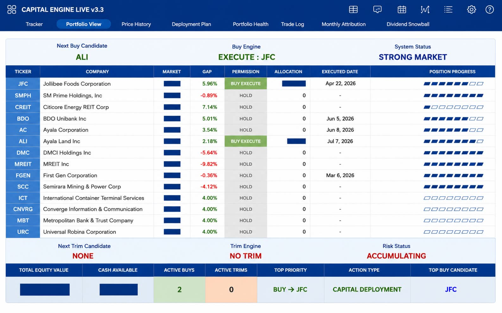
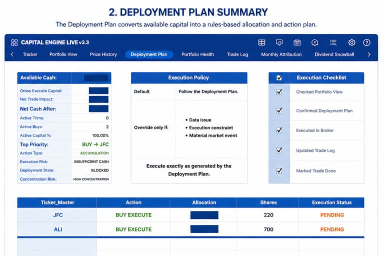
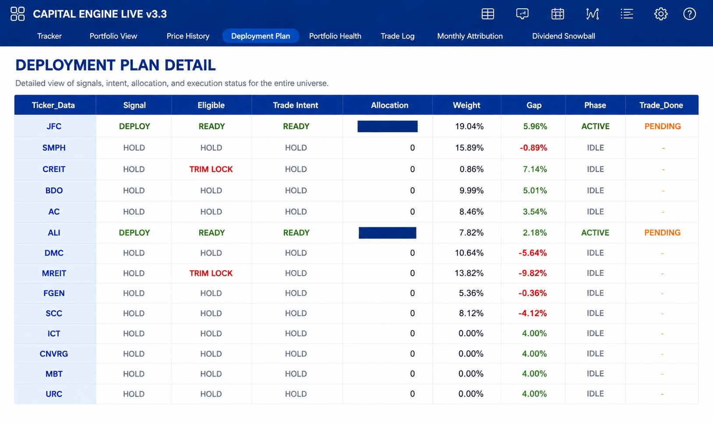
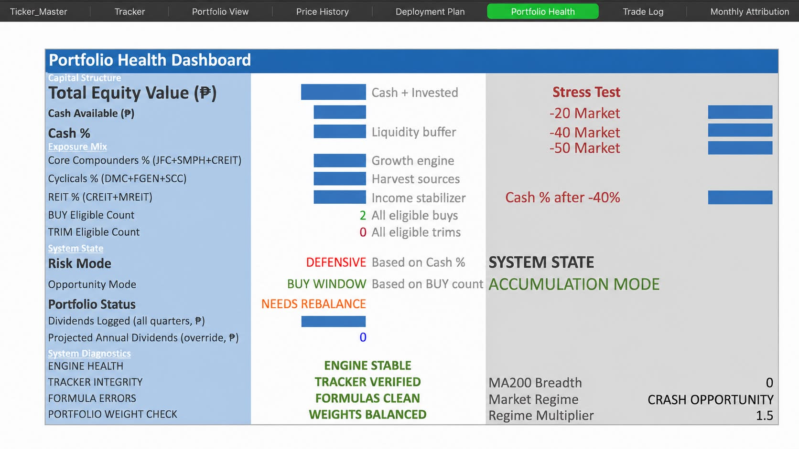

Opportunity Ranking
Identifies higher-priority opportunities within an approved investment universe.
Rules-Based Investment Operating System
Derequito Capital Engine™ is designed to remove emotion from long-term investing through disciplined allocation, structured decision rules, and repeatable portfolio management.
What the Engine Does
The Derequito Capital Engine™ is a rules-based framework for long-term accumulation and portfolio management.
Here, “operating system” means the connected rules, portfolio data, workflows, controls, and reviews used to manage long-term investment decisions. It is not a computer operating system and does not trade automatically.
The Engine is portfolio-driven, not indicator-heavy. Its primary market indicator is the 200-day moving average, while most decisions are based on portfolio data such as current holdings, portfolio weights, available cash, target allocations, position size, concentration, execution status, and the approved investment universe.
It is not a broker, bank, fund, robo-advisor, or automated trading bot. It does not hold money, connect directly to a bank account, or execute trades automatically.
For example, if an approved holding is below its intended portfolio weight, the Engine reviews available cash, portfolio concentration, position limits, and broad market context before determining whether capital should be deployed. The investor then decides whether to proceed and places the trade through their own broker.
Identifies higher-priority opportunities within an approved investment universe.
Guides deployment decisions using a structured capital planning process.
Helps determine disciplined exposure instead of relying on instinct or emotion.
Monitors portfolio balance, concentration, and long-term structural quality.
Supports consistent risk control through predefined rules and review processes.
Encourages annual company-level review before capital remains permanently committed.
See the Engine
The Derequito Capital Engine™ is currently under controlled development and beta testing. Public downloadable access is not yet available. A US stocks edition is also undergoing controlled burn-in testing before wider use.
The holdings shown are from the founder’s current investment universe. The Engine can be configured around another investor’s existing portfolio or approved list of long-term holdings.
01 · Portfolio View
A consolidated view of holdings, allocation, execution status, position progress, and the Engine’s next recommended action.

02 · Deployment Plan
The Deployment Plan applies execution policy, portfolio constraints, allocation rules, and an operating checklist before capital is deployed.

03 · Decision Detail
The detailed view shows how each approved investment moves through the Engine from signal and eligibility to allocation and execution.

04 · Portfolio Health
Portfolio Health evaluates capital structure, exposure mix, stress-test conditions, portfolio status, and the integrity of the operating system.

The Derequito Capital Engine™ is currently under controlled development and beta testing. Public downloadable access is not yet available.
Why It Exists
Most investors know discipline matters. Fewer have a system that tells them what to buy, how much to allocate, when to rebalance, and when to step back.
The Derequito Capital Engine™ exists to convert investing principles into an operating framework: structured, documented, and continuously improved.
Public Roadmap
Premium homepage, brand system, visual language, release documentation, and RC2 clarity improvements.
A US equities edition is undergoing controlled burn-in testing to validate formulas, portfolio logic, execution rules, and operating reliability before wider use.
Expanded About, investment philosophy, core principles, roadmap, and frequently asked questions.
Version history, FAQ, changelog, architecture, and user-guide foundation.
Commercial-ready presentation and a deeper explanation of the Engine workflow.
Foundation site released and deployment pipeline verified.
Frequently Asked Questions
No. The Derequito Capital Engine™ is a rules-based investment framework. It does not hold money, connect directly to bank accounts, or execute trades automatically.
No. Investors remain responsible for reviewing every recommendation, making the final decision, and placing trades through their own broker.
The Engine is portfolio-driven rather than indicator-heavy. Its primary market indicator is the 200-day moving average, while most decisions rely on portfolio weights, available cash, target allocations, position limits, concentration, execution status, and the approved investment universe.
It means the connected rules, portfolio data, workflows, controls, and reviews used to organize long-term investment decisions. It is not a computer operating system.
Public downloadable access is not yet available. The system remains under controlled development, testing, documentation, and validation before wider release.
No. The website explains a personal rules-based investment framework and does not replace independent judgment or professional financial advice.
Built for Long-Term Discipline
This website will evolve alongside the engine: from homepage, to documentation portal, to product platform.